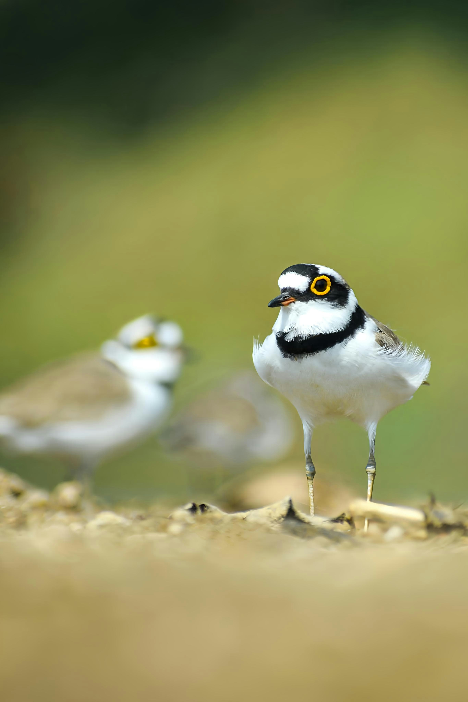

The Little Ringed Plover is a small, active shorebird usually found beside freshwater, including riverbanks, ponds, reservoirs, muddy shores, and other open wet habitats. It has a distinctive dark band across the chest, a dark mask around the eyes, a white throat, and yellowish legs. It feeds by running quickly across the ground, suddenly stopping, and picking up insects, worms, and other tiny invertebrates. Its small size and sandy-brown upperparts can make it difficult to notice among stones, mud, and bare ground. When disturbed, it can rapidly move along the shoreline or fly to another feeding area.
Family: Charadriidae